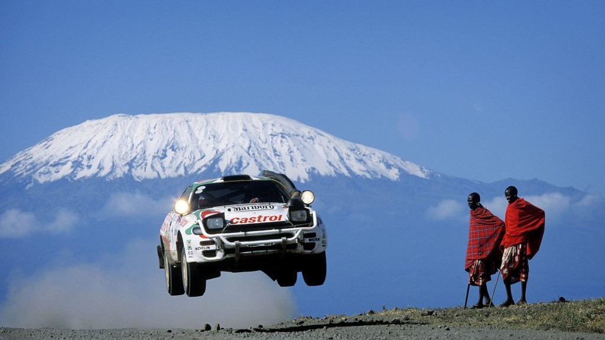
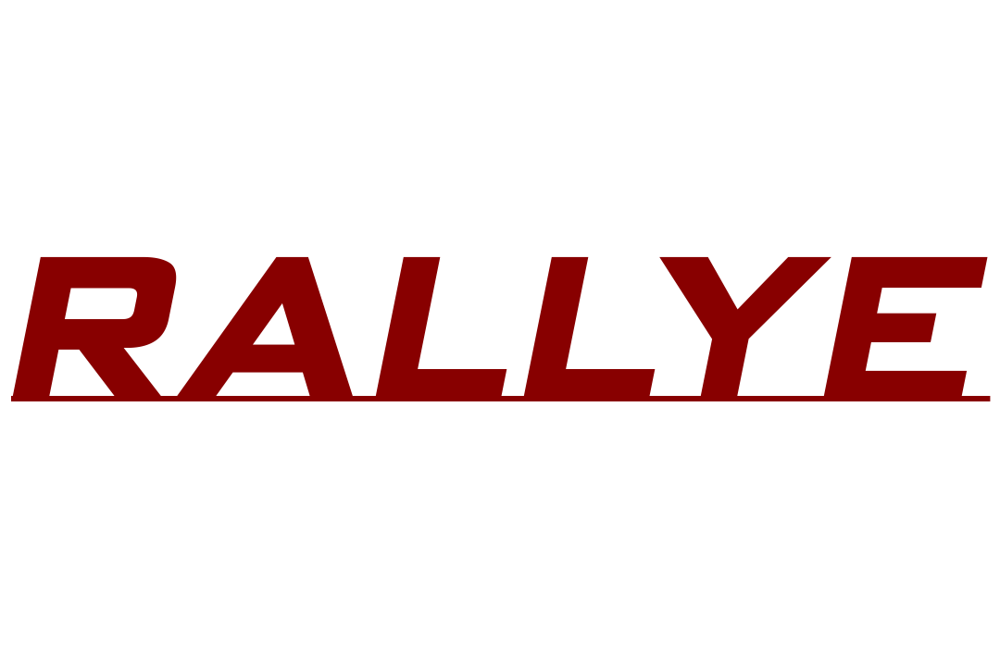

Home
History
Media
Home
History
Media




These are the most common format of professional rallies and rally championships. The FIA organises the World Rally Championship, Regional Rally Championships and many countries' motorsport governing bodies organise domestic rallying championships using speed competitions. The stages may vary from flat asphalt and mountain passes to rough forest tracks, from ice and snow to desert sand, each chosen to provide a challenge for the crew and a test of the car's performance and reliability. A single-venue rally takes place without the need for public road sections though the format and rules remain.
Also commonly known by its types rally-raid or baja; cross-country rallies take place mostly off-road using similar competitive elements to road and special stage rallying competitions. When off-road, waypoints and markers are set using GPS systems, although competitors cannot use GPS for navigation. Crews must choose how best to cross the terrain to the next waypoint whilst respecting the navigational instructions provided in the roadbook. The challenge is mostly navigational and endurance. The World Rally-Raid Championship was inaugurated in 2022, including the annual Dakar Rally in its calendar, with joint sanctioning by the FIA and FIM.
A touring assembly may have an organised route and simple passage controls but not any form of competition held or prizes given. One example, the Gumball 3000, which calls itself 'a rally not a race', explicitly states in its terms that no form of competition between participants must take place. The FIA defined this activity under 'rally of the touring kind' at least until 2007, though have now separated the term 'Touring Assembly' without using the word rally in its definition.